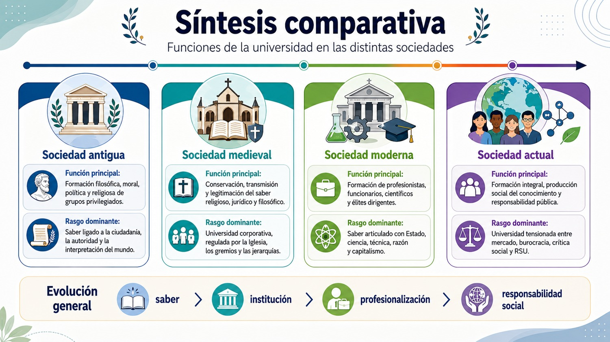
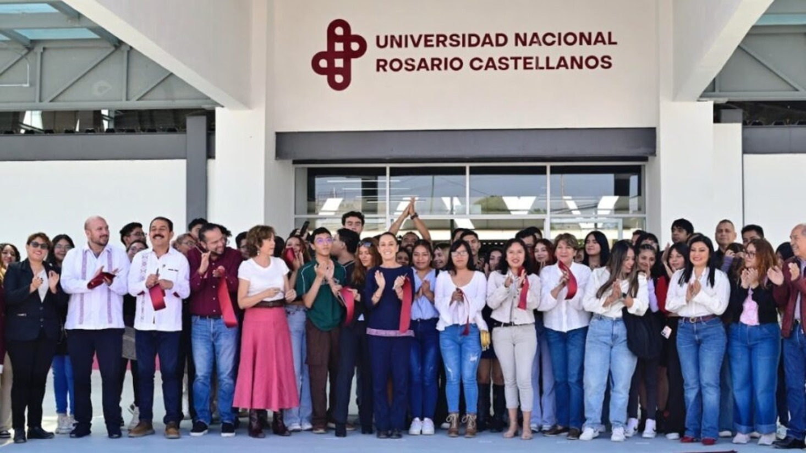
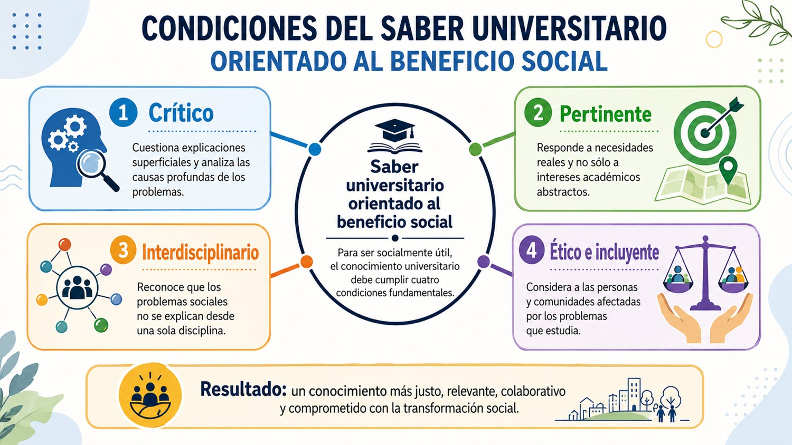
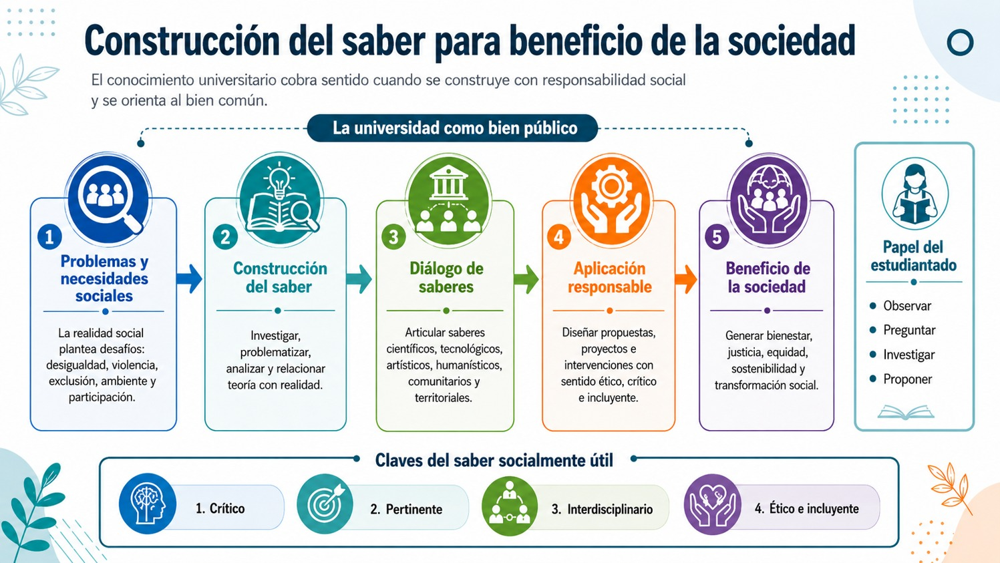

La universidad, entendida como institución productora, transmisora y legitimadora del saber, no ha cumplido siempre las mismas funciones. Su papel ha cambiado de acuerdo con la organización social, económica, política y cultural de cada época. A partir de El mito de la universidad (Bonvecchio, 1991), puede observarse que la universidad no es una institución neutra ni aislada, sino una forma histórica que expresa las necesidades, tensiones y aspiraciones de cada sociedad. En algunos momentos ha funcionado como espacio de conservación del saber; en otros, como mecanismo de formación de élites; en la modernidad, como aparato de racionalización estatal y profesionalización; y en la actualidad, como institución tensionada entre la oferta y demanda del mercado, la burocracia, la crítica social y la responsabilidad pública.
La función del saber en las sociedades antiguas
En las sociedades antiguas no existía la universidad en el sentido institucional que conocemos hoy. Sin embargo, sí existían espacios, figuras y prácticas orientadas a la conservación y transmisión del saber. El conocimiento se encontraba vinculado con la filosofía, la religión, la política, la retórica, la medicina, la astronomía, la matemática y la formación moral de los ciudadanos o de ciertos grupos privilegiados.
En este contexto, la función formativa del saber estaba ligada a la construcción de una determinada idea de humanidad. En la Grecia clásica, por ejemplo, la educación filosófica buscaba formar al ciudadano capaz de participar en la vida pública, deliberar sobre los asuntos comunes y cultivar la razón. El saber no tenía solamente una utilidad técnica, sino también ética y política. Aprender significaba formarse para comprender el orden del mundo, la vida colectiva y el lugar del ser humano dentro de la polis.
No obstante, esta función formativa era profundamente restringida. El acceso al saber estaba limitado por condiciones de clase, género, ciudadanía y posición social. Por ello, aunque el conocimiento podía presentarse como búsqueda de verdad universal, en la práctica estaba reservado a minorías. Desde esta perspectiva, la función social del saber antiguo consistía en formar dirigentes, sacerdotes, escribas, filósofos, juristas o administradores capaces de sostener el orden político y cultural de su tiempo.
Así, en las sociedades antiguas, el conocimiento cumplía una doble función: por un lado, permitía interpretar el mundo y cultivar la vida intelectual; por otro, servía para organizar jerarquías sociales, legitimar autoridades y preservar tradiciones. La universidad aún no existía como institución autónoma, pero ya se perfilaba una relación fundamental que después sería central en su historia: la relación entre saber y poder.
La universidad en la sociedad medieval
La universidad medieval surge en un mundo organizado alrededor de la Iglesia, los gremios, las corporaciones y los poderes monárquicos. A diferencia de la antigüedad, aquí el saber comienza a organizarse institucionalmente en facultades, métodos de enseñanza, grados académicos y comunidades de maestros y estudiantes. La universidad medieval cumplió una función decisiva: conservar, ordenar y transmitir el conocimiento considerado legítimo.
En la sociedad medieval, la universidad tenía una fuerte función religiosa, jurídica y filosófica. Sus saberes principales estaban vinculados con la teología, el derecho, la medicina y las artes liberales. La formación universitaria respondía a las necesidades de una sociedad que requería clérigos, juristas, médicos, administradores y hombres letrados capaces de servir a la Iglesia, al Estado monárquico o a las corporaciones urbanas. Bonvecchio, (1991), señala que, hacia el final del mundo medieval, la universidad comienza a desempeñar un papel importante como canal de movilidad social y como espacio de formación de ciertos grupos dirigentes.
Su función formativa consistía en transmitir un saber jerarquizado, ordenado y reconocido por la autoridad. No se trataba de una formación orientada principalmente a la innovación, sino a la conservación de una tradición intelectual. El estudiante debía incorporarse a una comunidad académica regida por normas, grados, disputas y rituales propios. La universidad era, en este sentido, una institución corporativa: protegía el saber, regulaba su enseñanza y definía quién podía ser reconocido como poseedor legítimo de conocimiento.
Sin embargo, la universidad medieval también tuvo una función social ambigua. Por un lado, reproducía jerarquías religiosas, políticas y culturales; por otro, abría ciertos espacios de movilidad y debate. El saber universitario no era plenamente democrático, pero permitía que algunos sectores accedieran a funciones sociales relevantes. De este modo, la universidad medieval fue al mismo tiempo espacio de conservación, formación profesional temprana y legitimación social.
La universidad en la sociedad moderna
Con el ascenso de la modernidad, la universidad cambia profundamente. Bonvecchio (1991), ubica este proceso en relación con la crisis del orden feudal, el ascenso de la burguesía, la consolidación del Estado moderno y el desarrollo del capitalismo. En este nuevo contexto, el saber deja de estar organizado principalmente alrededor de la tradición religiosa y comienza a vincularse con la razón, la ciencia, la técnica, la administración y la producción social.
La función formativa de la universidad moderna consiste en preparar personas racionales, profesionistas, científicas, funcionarias y especialistas capaces de participar en la construcción del nuevo orden social. El conocimiento se vuelve un instrumento fundamental para la administración del Estado, el desarrollo económico, la organización burocrática y la consolidación de nuevas profesiones. La universidad moderna ya no solo conserva saberes: los clasifica, los actualiza, los disciplina y los articula con necesidades políticas y productivas.
En este periodo, la universidad adquiere una función central en la formación de las élites modernas. Sus egresadas y egresados ocupan lugares en la administración pública, la ciencia, la educación, el derecho, la medicina, la ingeniería y otros campos profesionales. La universidad se convierte en una institución clave para producir cuadros dirigentes, técnicos y administrativos. Por ello Bonvecchio, (1991) insiste en que la universidad moderna debe comprenderse dentro de la relación entre saber y poder: el conocimiento ya no es solo contemplación, sino instrumento de organización social.
Al mismo tiempo, la universidad moderna también se presenta como un ideal. Aparece la idea de la universidad como templo laico del saber, espacio de libertad académica, investigación, autonomía y formación integral. En autores como Humboldt, la universidad se imagina como una comunidad orientada por la investigación libre, la unidad entre enseñanza e investigación y la formación del espíritu. Sin embargo, como se muestra en el libro, este ideal convive con contradicciones: la universidad moderna puede promover libertad intelectual, pero también puede ser absorbida por el Estado, la burocracia o los intereses de clase.
Por ello, en la sociedad moderna la universidad cumple una triple función: formar profesionistas, producir conocimiento científico y legitimar un determinado orden social. Su grandeza consiste en haber ampliado el horizonte de la razón, la ciencia y la formación; su límite consiste en que muchas veces subordinó el saber a los intereses del Estado, del mercado o de las clases dominantes.
La universidad en la sociedad actual
En la sociedad actual, la universidad se encuentra en una situación especialmente compleja. Bonvecchio, (1991), habla de una crisis de identidad de la universidad contemporánea y señala que muchas de sus funciones tradicionales se han transformado. La universidad ya no puede sostenerse únicamente como “templo del saber” ni como institución cerrada sobre sí misma. Hoy se encuentra atravesada por demandas de mercado, burocratización, masificación educativa, tecnificación del conocimiento, exigencias de productividad, acreditación, competencia institucional y responsabilidad social.
Una de las críticas centrales del Bonvecchio, (1991) es que la universidad corre el riesgo de convertirse en una especie de “fábrica” de estudiantes, personas graduadas, administradores o profesionistas. Cuando esto ocurre, la formación pierde su sentido liberador y se reduce a la obtención de credenciales. El conocimiento deja de ser una búsqueda crítica de la realidad y se transforma en un bien útil, medible, administrable o vendible. Esta es una de las tensiones más importantes de la universidad actual: formar para el mercado o formar para la sociedad.
La función formativa contemporánea, por tanto, no puede limitarse a capacitar técnicamente. La universidad actual debe formar personas capaces de comprender problemas complejos, actuar éticamente, dialogar con distintas formas de saber y participar en la solución de desafíos sociales. Esto implica recuperar una idea de formación integral: no basta con saber hacer; también es necesario saber pensar, saber convivir, saber decidir y saber responsabilizarse por los efectos sociales del conocimiento.
La función social de la universidad actual se amplía en el marco de la Responsabilidad Social Universitaria. La universidad debe preguntarse por sus impactos internos y externos: cómo forma a sus estudiantes, qué tipo de investigación produce, cómo se vincula con la comunidad, a quién beneficia el conocimiento, qué desigualdades reproduce y qué posibilidades de transformación abre. En este sentido, la universidad contemporánea ya no puede considerarse una institución aislada, sino un actor social con responsabilidades éticas, culturales, ambientales y políticas.
La universidad actual también debe asumir una función intercultural y democrática. Esto significa reconocer que el conocimiento no proviene únicamente de la academia, sino también de las comunidades, los territorios, las experiencias sociales, los pueblos originarios, los movimientos sociales, las artes, las tecnologías y los saberes prácticos. Frente a una sociedad plural y desigual, la universidad tiene la tarea de abrir espacios de diálogo, participación y construcción colectiva del conocimiento. En el siguiente diagrama puedes ver una síntesis comparativa de las funciones de la universidad en las distintas sociedades en la historia:

En conclusión, las funciones de la universidad han cambiado de acuerdo con cada sociedad. En la antigüedad, el saber formaba a ciertos grupos para interpretar y gobernar el mundo; en el medioevo, la universidad conservó y legitimó saberes bajo estructuras religiosas y corporativas; en la modernidad, se convirtió en una institución clave para el Estado, la ciencia y la profesionalización; y en la actualidad enfrenta el desafío de recuperar su sentido social frente a la mercantilización, la burocratización y la desigualdad. En nuestra casa de estudios, reconocemos que la tarea más importante que tenemos como universidad es formarte como una persona crítica y comprometida capaz de transformar el conocimiento en beneficio colectivo.

Imagen tomada de https://lado.mx/noticia/19474723/. Consultado el 01/08/2026.
- Bonvecchio, Claudio (1991). El mito de la universidad. México: SXXI editores.
Te recomendamos ver estos videos para profundizar sobre este tema:
Construcción del saber para beneficio de la sociedad.
La construcción del saber para beneficio de la sociedad parte de una idea central: el conocimiento universitario no debe entenderse como una acumulación aislada de información, ni como un privilegio reservado a ciertos grupos, sino como una práctica social orientada a comprender, intervenir y transformar la realidad. Como vimos anteriormente, en El mito de la universidad (Bonvecchio, 1991), la universidad aparece como una institución atravesada históricamente por la relación entre saber, poder, formación y sociedad. Por ello, construir saber implica preguntarse no solo qué se conoce, sino para qué se conoce, quién produce ese conocimiento, a quién beneficia y qué efectos genera en la vida colectiva.
En este sentido, debes distinguir la construcción del saber de la simple transmisión de contenidos ya que transmitir contenidos significa reproducir información ya establecida; construir saber, en cambio, implica investigar, dialogar, problematizar, contrastar perspectivas y vincular el conocimiento con las necesidades sociales. La universidad cumple una función formativa cuando te enseña a pensar críticamente, pero cumple una función social cuando ese pensamiento se orienta hacia el bien común. Así, el saber universitario adquiere sentido cuando contribuye a ampliar la comprensión de los problemas sociales y a generar alternativas frente a ellos.
Bonvecchio (1991), advierte que la universidad puede perder su sentido cuando se reduce a una institución burocrática, profesionalizante o productora de credenciales. En ese caso, el conocimiento corre el riesgo de convertirse en una herramienta meramente funcional al mercado, al Estado o a las jerarquías sociales. Frente a ello, la construcción del saber para beneficio de la sociedad exige recuperar la dimensión crítica y pública de la universidad. El conocimiento no debe ser producido únicamente para la eficiencia institucional o la competencia profesional, sino para responder a problemas concretos: desigualdad, exclusión, violencia, deterioro ambiental, injusticia social, discriminación, falta de participación y debilidad democrática.
La construcción social del saber también implica superar la idea de que la universidad es el único lugar legítimo de producción de conocimiento. Si bien la universidad posee métodos rigurosos de investigación, reflexión y validación académica, no puede ignorar que existen saberes comunitarios, populares, técnicos, artísticos, territoriales, interculturales y experienciales. El beneficio social del conocimiento aumenta cuando la universidad dialoga con esos saberes, escucha a los grupos de interés y reconoce que las comunidades no son simples receptoras de conocimiento, sino también productoras de experiencia, memoria, diagnóstico y propuestas.
Por ello, construir saber para la sociedad requiere una relación distinta entre universidad y comunidad. En ese sentido, no se trata de que la universidad “lleve” conocimiento a la sociedad desde una posición superior, sino de que participe en procesos de co-construcción. Esto significa identificar problemas junto con las comunidades, formular preguntas pertinentes, reconocer necesidades reales, valorar experiencias locales y diseñar soluciones con participación social. El conocimiento socialmente útil no nace únicamente del escritorio académico; también se construye en el encuentro entre investigación, docencia, territorio y vida cotidiana.
En este proceso, tú como estudiante tienes un papel fundamental, ya que no eres únicamente una persona receptora de información, también eres sujeto en formación capaz de observar tu entorno, formular preguntas, analizar problemas y participar en proyectos de transformación social. De ese modo, la construcción del saber para beneficio de la sociedad comienza cuando el aprendizaje se conecta con la realidad: cuando una teoría permite comprender un problema comunitario, cuando una investigación ayuda a visibilizar una desigualdad, cuando una práctica profesional mejora una condición de vida o cuando un proyecto académico fortalece la participación colectiva.
Esta perspectiva también modifica la forma de entender la formación universitaria ya que aprender no significa solamente aprobar asignaturas o acumular competencias profesionales; significa también desarrollar la capacidad de producir conocimiento con sentido social. Esto implica saber investigar, pero también saber escuchar; saber argumentar, pero también saber dialogar; saber aplicar métodos, pero también reconocer los límites de la propia mirada. La construcción del saber exige responsabilidad porque todo conocimiento tiene efectos: puede liberar, pero también excluir; puede visibilizar problemas, pero también ocultarlos; puede transformar realidades, pero también reproducir desigualdades.
Por eso, el saber universitario orientado al beneficio social debe cumplir al menos cuatro condiciones como puedes observar en el siguiente diagrama:

Así, en el marco de esta UCA, la construcción del saber para beneficio de la sociedad se relaciona directamente con la idea de universidad como bien público. El que sea un bien público quiere decir que está abierta para todas y todos, que cualquiera puede entrar a ella y beneficiarse de ella. En ese sentido, si la universidad es una institución pública y socialmente responsable, entonces el conocimiento que produce debe contribuir a fortalecer la justicia, la equidad, la sostenibilidad, la paz, la democracia y la participación. La utilidad social del conocimiento no significa reducirlo a una aplicación inmediata o técnica; significa reconocer que el saber tiene valor cuando ayuda a comprender mejor la realidad y a construir condiciones de vida más dignas.
En conclusión, la construcción del saber para beneficio de la sociedad es una tarea central de la universidad contemporánea. Implica pasar de una universidad encerrada en sí misma a una universidad abierta al diálogo social; de una formación basada solo en contenidos a una formación orientada a problemas reales; de una producción de conocimiento aislada a una construcción colectiva, crítica e intercultural. Para ti como estudiante, esto significa asumir que cada aprendizaje puede convertirse en una herramienta para participar responsablemente en la transformación de tu entorno. Así, el saber universitario alcanza su sentido más profundo cuando deja de ser un privilegio individual y se convierte en una posibilidad compartida de bienestar, justicia y cambio social, como se muestra en el siguiente diagrama:

- Bonvecchio, Claudio (1991). El mito de la universidad. México: SXXI editores.